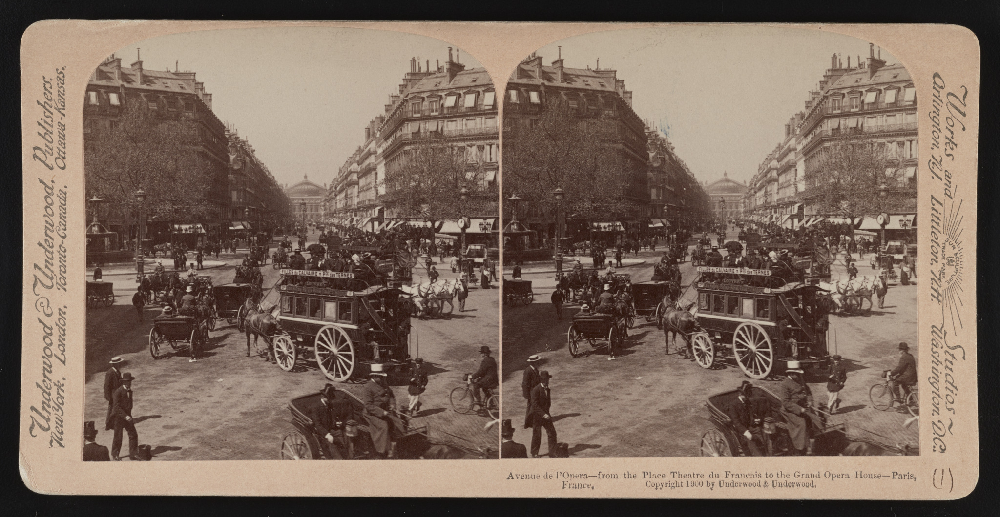

Paris stereoscope
Avenue de l’Opéra, Paris · Underwood & Underwood, 1900

The two exposures record slightly different views of the street. Switch eyes to see the shift between the opera house and the omnibus. Scan courtesy of the Library of Congress, Prints and Photographs Division, LC-DIG-stereo-1s24047. Original catalog record